先确认自己适合下水
睡眠、饮酒、感冒鼻塞、药物、晕船、耳压史、近期病史都要诚实评估。若身体不舒服，取消比硬撑更专业。
Check fitness to dive: sleep, alcohol, congestion, medication, seasickness, ear issues, and recent illness.
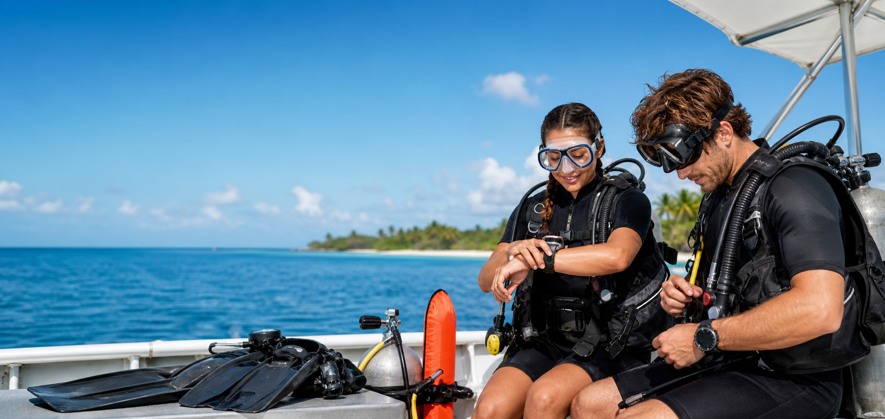
Pre-trip flow
睡眠、饮酒、感冒鼻塞、药物、晕船、耳压史、近期病史都要诚实评估。若身体不舒服，取消比硬撑更专业。
Check fitness to dive: sleep, alcohol, congestion, medication, seasickness, ear issues, and recent illness.
BCD、调节器、备用二级头、气瓶阀、SPG、电脑表、配重和快卸位置。任何异常都要在入水前解决。
Review your life-support equipment before entry. Fix any issue before you get in.
最大深度、路线、流向、回头气压、低气气压、集合点、上升方式、走散流程、紧急信号。
Understand max depth, route, current, turn pressure, low-air pressure, exit, ascent, lost-buddy procedure, and emergency signals.
慢下潜、慢踢、慢上升。用呼吸微调浮力，常看电脑表和气压表，跟潜伴保持近距离。
Descend slowly, fin slowly, ascend slowly. Check your computer and SPG often, and stay close to your buddy.
Knowledge cards
目标不是“能沉下去”，而是穿当前装备、当前气瓶和当前盐度时，可以在安全停留深度轻松中性悬浮。下潜时少量充放气，水下主要用呼吸微调。
The goal is not simply to sink. You should be able to hover neutrally at safety-stop depth with your current kit, cylinder, and water conditions. Use small BCD adjustments and fine-tune with breathing.
下潜前就开始平衡，不要等到痛。失败时停住、上升一点、重新尝试。鼻塞或无法平衡时不要硬下。
Equalize early and often, before discomfort. If it does not work, stop, ascend slightly, and try again. Do not force a descent when congested or unable to equalize.
潜前确认回头气压、低气提醒和上船/出水最低气压。水下固定频率看 SPG，不要等潜导问才发现自己低气。
Confirm turn pressure, low-air signal, and minimum pressure for surfacing before the dive. Check your SPG frequently instead of waiting for the guide to ask.
AOW 常见深度更深，免减压时间会明显变短。潜水电脑只辅助决策，不替代保守计划；全程不要超过证书、经验和当天 brief 的限制。
On deeper AOW-style dives, no-decompression limits shorten quickly. A dive computer supports decisions but does not replace conservative planning. Stay within your certification, experience, and the dive briefing.
上升要慢，保持呼吸，不憋气。接近 5 米时更要控制浮力，做安全停留，并注意船只、浪、流和 SMB 要求。
Ascend slowly and keep breathing. Control buoyancy carefully near 5 meters, complete the safety stop, and follow the guide’s SMB and boat-safety instructions.
下水前记住路线、岸/船方向、礁石在左还是右、转折点和集合点。水下不要只盯相机，定期看潜导、潜伴、深度和方向。
Before entry, remember the route, boat or shore direction, reef side, turning points, and meeting point. Underwater, keep checking guide, buddy, depth, and direction.
有流时不要逆流硬顶。确认是 mooring line 下潜、negative entry，还是跟流漂。放流潜要确认谁打 SMB、什么时候打、走散后怎么上升。
In current, do not fight it unnecessarily. Confirm whether you descend on a mooring line, make a negative entry, or drift with the current. Know who deploys the SMB and the lost-buddy procedure.
面镜进水、调节器脱落、抽筋、耳压问题、低气、走散，都要先停住、呼吸、思考、行动。走散通常搜索约一分钟，然后按 brief 安全上升。
For mask leaks, regulator recovery, cramps, equalization issues, low air, or separation: stop, breathe, think, act. For a lost buddy, the common plan is to search briefly, then ascend safely as briefed.
Equipment function checks
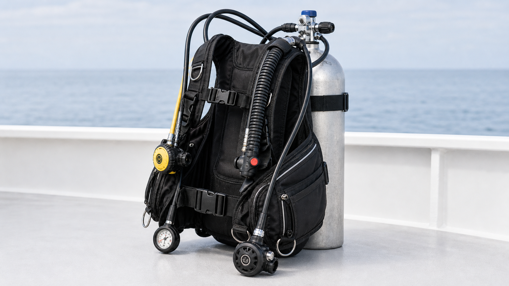
Check pressure, inspection dates, valve O-ring, leaks, and any unusual smell from the gas.
Inflate, deflate through every dump valve, orally inflate, check for leaks, and secure the tank band.
Breathe from both second stages, check purge, hose routing, mouthpieces, and leaks.
Confirm amount, balance, ditching method, and that both divers know each other’s release system.
Set units, gas mix, alarms, conservatism, battery, and agree on team limits before entering.
Check marker, spool, clips, cutting tool, and the SMB plan before a drift or boat dive.
Underwater communication
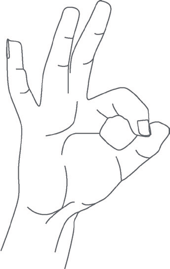
拇指和食指成圈。作为问题时要回答；不 OK 时不要硬回 OK，直接指出问题。
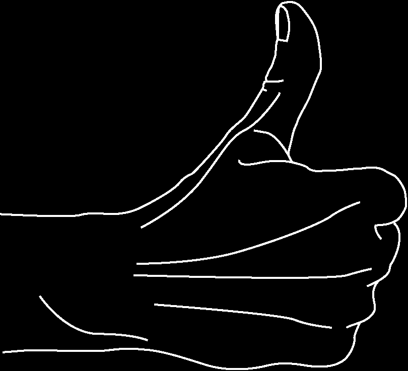
拇指向上是 call the dive / ascend，不是“赞”。任何人打出后，团队应结束潜水并开始退出/上升。
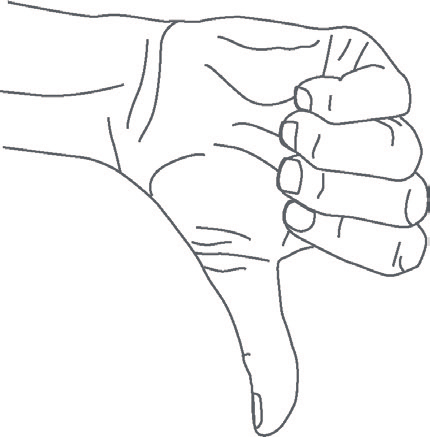
拇指向下表示下潜或去更深深度；确认耳压和团队状态后再继续。
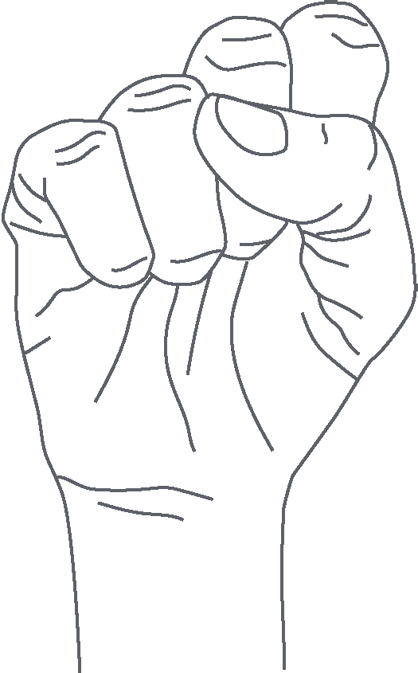
GUE 常用闭拳朝向对方表示 stop/hold；开放水域也常见张开手掌。这个指令必须回应确认。
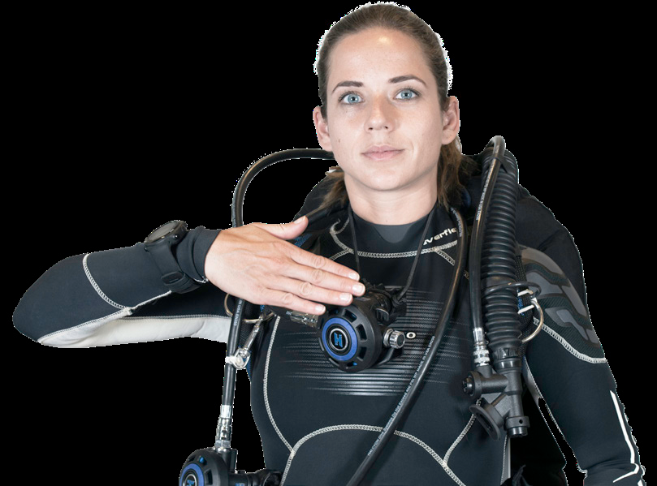
手横切喉咙。这是紧急信号，收到后立刻捐气或提供备用气源。
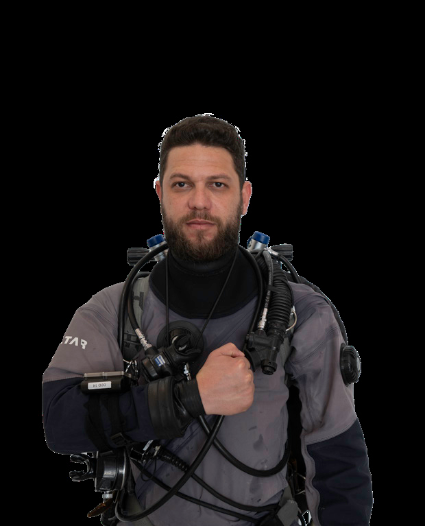
拳头轻敲胸前，表示气量低但不是已经没气。随后报气压或准备结束潜水。
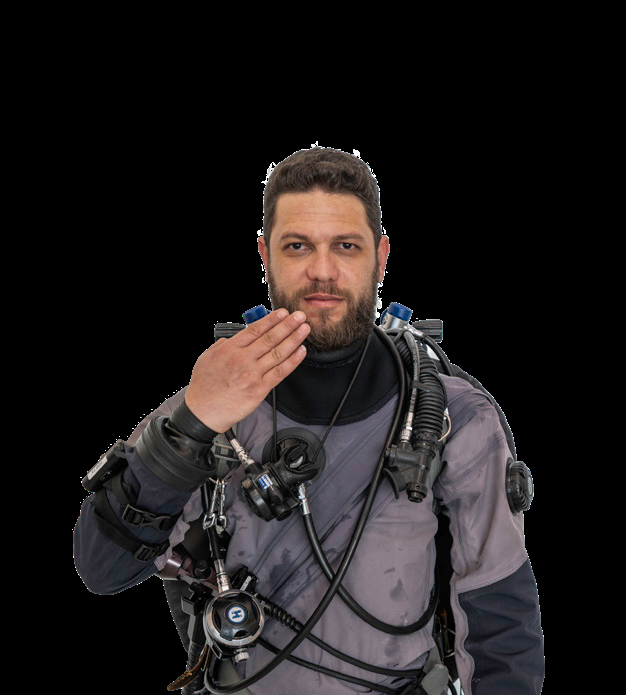
手指靠近正在呼吸的调节器，表示需要共享气体。和 low gas、out of gas 分清楚。
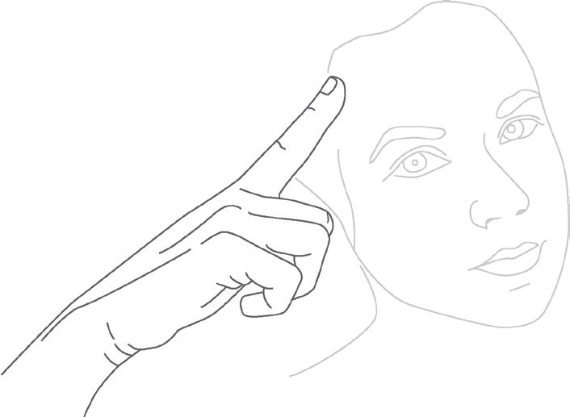
指向耳朵。停止下潜，上升一点，重新平衡；疼痛就终止下潜。
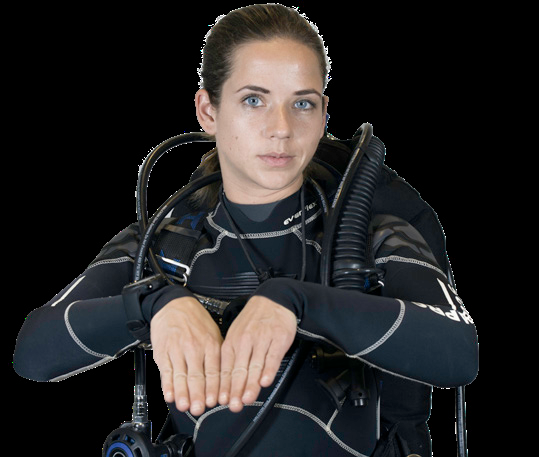
手掌向下，轻微上下压。用于放慢游速、稳定呼吸、安抚紧张潜水员。
先拿到对方注意，再在视野中央慢慢做手势。不要用很小、很快的动作；对方看不懂时，重复、简化，或者用写字板。
Get attention first, establish eye contact, signal slowly in the diver’s field of view, and confirm understanding.
夜潜或低能见度时，灯光不要照眼睛。慢圈通常表示 OK，左右晃动表示注意，快速乱晃才是紧急求助。
Avoid shining into eyes. Slow circle can mean OK; a deliberate side-to-side movement asks for attention; rapid movement signals emergency.
Buddy, team, emergencies
B - BCD：互相操作充气、排气、口吹；确认低压管连接、气瓶带稳固、入水前有正浮力。
W - Weights：配重数量、左右平衡、快卸方向；双方都能找到对方快卸。
R - Releases：肩扣、胸扣、腰扣、气瓶带、附件扣具；知道紧急时先解哪里。
A - Air：主二级和备用二级都吸气；看 SPG 是否随呼吸明显掉压；确认气瓶阀全开。
F - Final：面镜、脚蹼、电脑表、SMB、相机、灯、切割工具；问一句 “Anything missing?”
简化 GUE EDGE：Goal 目标、Unified team 角色、Equipment 装备匹配、Exposure 深度/时间、Deco/Ascent 上升方案、Gas 气体策略、Environment 环境风险。
Stop, breathe, search briefly, ascend as briefed, establish positive buoyancy, signal on the surface.
Signal early, share gas, make contact, stabilize, and ascend together under control.
Keep the regulator in, exhale continuously, control buoyancy, ascend slowly, and establish positive buoyancy at the surface.
You may be able to breathe from a free-flowing second stage while ending the dive and ascending with your buddy.
Stop, breathe, signal, stabilize, and call the dive early when something feels wrong.
Dump gas, breathe, increase drag, swim horizontally out of the current, and end the dive if control is lost.
Add small amounts of gas, monitor depth, swim horizontally away from the wall or corner, signal the team, and call the dive.
Finning techniques
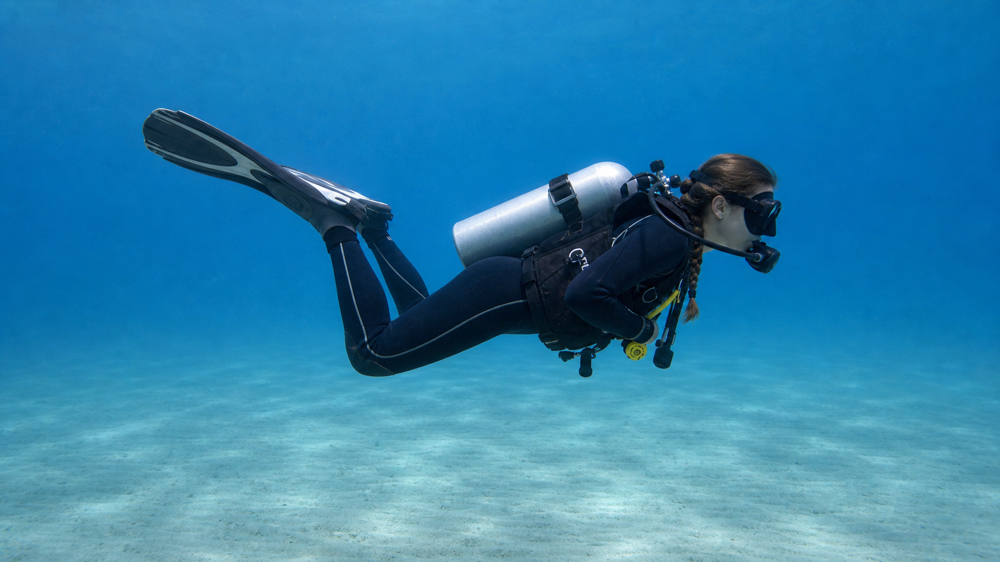
静态图只能帮你识别姿态，真正的节奏、收腿、滑行和停顿要看视频，再在浅水练。
像自由泳腿，上下交替。优点是直觉、容易；缺点是靠近沙地或珊瑚时容易向下打水、扬沙或踢到底部。
膝盖微弯，脚跟回收，脚蹼向外后方推水，再放松滑行。适合大多数巡游，省气，也更不容易破坏环境。
在近底、窄处、拍照或低能见度时使用更小幅度的 flutter/frog。重点是脚踝控制，不要大幅摆腿。
用两只脚蹼做相反方向的小动作，让身体在原地旋转。适合观察、拍照、避让 buddy 或调整队形。
用于离开礁、墙、相机位或 buddy。这个动作不直觉，建议在泳池或浅水跟教练练，不要第一次在复杂环境里硬试。
先练中性浮力和水平 trim，再练蛙踢，然后是小幅改良踢、原地转向和后退踢。没有稳定浮力时，踢法会变成“救浮力”。
English briefing trainer
“We’ll enter from the back of the boat, meet at the surface, then descend along the mooring line. Max depth is eighteen meters. Signal me at seventy bar, and we’ll start ascending at fifty bar.”
我们从船尾入水，水面集合后沿系泊绳下潜。最大深度 18 米。70 bar 通知我，50 bar 开始上升。
“This is a drift dive. Stay close to the group and don’t hold onto the reef. If you get separated, deploy your SMB if trained, ascend slowly, and wait for the boat.”
这是放流潜。靠近团队，不要抓珊瑚。如果走散，受过训练的话打 SMB，慢慢上升，等船来接。
“The deepest part is thirty meters. Watch your no-deco time and gas closely. If anyone feels narcosis, signal me and we’ll ascend a few meters.”
最深处 30 米。密切关注免减压时间和气量。若有人感觉氮醉，通知我，我们会上升几米。
“Keep your light on, avoid shining it into someone’s eyes, and use the light circle for signals. If your light fails, go to your buddy and end the dive.”
保持手电开启，不要照别人眼睛，用光圈打信号。如果手电故障，靠近潜伴并结束潜水。
| 中文场景 | English phrase | 你需要做什么 |
|---|---|---|
| 沿绳下潜 | Descend along the line. | 抓方向，不必硬拉绳，控制速度。 |
| 保持礁石在右侧 | Keep the reef on your right. | 记路线，回程/漂流时不要走反。 |
| 流会变强 | The current may pick up. | 靠近队伍，减少停留拍照。 |
| 看气压 | Check your air. | 看 SPG，向潜导/潜伴报数。 |
| 慢慢上升 | Ascend slowly. | 抬头看上方，排气，保持呼吸。 |
| 水面集合 | Meet at the surface. | 入水后先集合，再按计划下潜。 |
| 不要碰珊瑚 | Do not touch the reef. | 控制浮力和蛙踢，注意相机和脚蹼。 |
| 你还好吗 | Are you OK? | 回 OK，不舒服就明确示意问题。 |
Pack & pre-dive
Vocabulary table
| English | IPA | 中文 | 常见搭配 |
|---|---|---|---|
| regulator | /ˈreɡjəleɪtər/ | 调节器 | primary regulator / backup regulator |
| first stage | /ˌfɜːrst ˈsteɪdʒ/ | 一级头 | attach the first stage |
| second stage | /ˌsekənd ˈsteɪdʒ/ | 二级头 | breathe from the second stage |
| alternate air source | /ˈɔːltərnət er sɔːrs/ | 备用气源 | donate the alternate air source |
| BCD / buoyancy compensator | /ˌbiː siː ˈdiː/ /ˈbɔɪənsi ˈkɑːmpənseɪtər/ | 浮力调整装置 | inflate your BCD |
| low-pressure inflator | /loʊ ˈpreʃər ɪnˈfleɪtər/ | 低压充气阀 | connect the inflator hose |
| dump valve | /dʌmp vælv/ | 排气阀 | use the rear dump valve |
| SPG / pressure gauge | /ˌes piː ˈdʒiː/ /ˈpreʃər ɡeɪdʒ/ | 残压表 | check your SPG |
| cylinder / tank | /ˈsɪlɪndər/ /tæŋk/ | 气瓶 | tank valve / cylinder pressure |
| tank valve | /tæŋk vælv/ | 气瓶阀 | open the tank valve fully |
| O-ring | /ˈoʊ rɪŋ/ | O 型圈 | check the O-ring |
| tank band | /tæŋk bænd/ | 气瓶带 | tighten the tank band |
| weight belt | /weɪt belt/ | 配重带 | release the weight belt |
| integrated weights | /ˈɪntɪɡreɪtɪd weɪts/ | 整合式配重 | secure integrated weights |
| dive computer | /daɪv kəmˈpjuːtər/ | 潜水电脑表 | set your dive computer |
| compass | /ˈkʌmpəs/ | 指北针 | take a compass heading |
| SMB / DSMB | /ˌes em ˈbiː/ /ˌdiː es em ˈbiː/ | 水面标记浮标 | deploy your SMB |
| spool / reel | /spuːl/ /riːl/ | 线轴 / 线轮 | hold tension on the spool |
| cutting tool | /ˈkʌtɪŋ tuːl/ | 切割工具 | carry a cutting tool |
| exposure suit | /ɪkˈspoʊʒər suːt/ | 防寒服 | wetsuit / drysuit |
| English | IPA | 中文 | 常见搭配 |
|---|---|---|---|
| descend | /dɪˈsend/ | 下潜 | descend slowly |
| ascend | /əˈsend/ | 上升 | ascend along the line |
| equalize | /ˈiːkwəlaɪz/ | 平衡耳压 | equalize early and often |
| hover | /ˈhʌvər/ | 悬浮 | hover neutrally |
| trim | /trɪm/ | 水平姿态 | good horizontal trim |
| buoyancy | /ˈbɔɪənsi/ | 浮力 | neutral buoyancy |
| finning | /ˈfɪnɪŋ/ | 踢蹼 | frog kick / flutter kick |
| purge | /pɜːrdʒ/ | 排水 / 按排气键 | purge the regulator |
| clear | /klɪr/ | 排水清除 | clear your mask |
| inflate | /ɪnˈfleɪt/ | 充气 | inflate your BCD |
| deflate | /dɪˈfleɪt/ | 排气 | deflate your BCD |
| streamline | /ˈstriːmlaɪn/ | 收纳顺滑 | streamline your hoses |
| deploy | /dɪˈplɔɪ/ | 部署 / 打出 | deploy a DSMB |
| clip off | /klɪp ɔːf/ | 扣回 D 环 | clip off the SPG |
| don / doff | /dɑːn/ /dɑːf/ | 穿上 / 脱下 | don your gear |
| English | IPA | 中文 | 常见搭配 |
|---|---|---|---|
| briefing | /ˈbriːfɪŋ/ | 简报 | listen to the dive briefing |
| maximum depth | /ˈmæksɪməm depθ/ | 最大深度 | What is the maximum depth? |
| bottom time | /ˈbɑːtəm taɪm/ | 水底时间 | planned bottom time |
| no-decompression limit | /ˌnoʊ diːkəmˈpreʃən ˈlɪmɪt/ | 免减压极限 | watch your NDL |
| safety stop | /ˈseɪfti stɑːp/ | 安全停留 | safety stop at five meters |
| ascent rate | /əˈsent reɪt/ | 上升速度 | control your ascent rate |
| turn pressure | /tɜːrn ˈpreʃər/ | 回头气压 | turn the dive at 100 bar |
| minimum gas | /ˈmɪnɪməm ɡæs/ | 最低保留气体 | surface with minimum gas |
| entry point | /ˈentri pɔɪnt/ | 入水点 | giant stride entry |
| exit point | /ˈeksɪt pɔɪnt/ | 出水点 | swim to the exit point |
| mooring line | /ˈmʊrɪŋ laɪn/ | 系泊绳 | descend along the mooring line |
| shot line | /ʃɑːt laɪn/ | 下潜定位绳 | return to the shot line |
| English | IPA | 中文 | 常见搭配 |
|---|---|---|---|
| current | /ˈkɜːrənt/ | 水流 | strong current / mild current |
| drift dive | /drɪft daɪv/ | 放流潜 | This is a drift dive. |
| surge | /sɜːrdʒ/ | 涌浪 | surge near the rocks |
| visibility | /ˌvɪzəˈbɪləti/ | 能见度 | poor visibility |
| thermocline | /ˈθɜːrməklaɪn/ | 温跃层 | pass through a thermocline |
| reef | /riːf/ | 礁 | keep the reef on your right |
| wall | /wɔːl/ | 峭壁 / 墙 | follow the wall |
| wreck | /rek/ | 沉船 | wreck dive |
| night dive | /naɪt daɪv/ | 夜潜 | keep your light on |
| boat traffic | /boʊt ˈtræfɪk/ | 船只交通 | watch for boat traffic |
| marine life | /məˈriːn laɪf/ | 海洋生物 | do not chase marine life |
| entanglement | /ɪnˈtæŋɡəlmənt/ | 缠绕风险 | entanglement hazard |
| English | IPA | 中文 | 常见搭配 |
|---|---|---|---|
| low on air | /loʊ ɑːn er/ | 气量低 | I’m low on air. |
| out of air | /aʊt əv er/ | 没气 | out-of-air emergency |
| gas sharing | /ɡæs ˈʃerɪŋ/ | 共享气体 | begin gas sharing |
| free-flow | /ˈfriː floʊ/ | 持续漏气 | free-flowing regulator |
| leak | /liːk/ | 泄漏 | check for leaks |
| lost buddy | /lɔːst ˈbʌdi/ | 潜伴走散 | lost-buddy procedure |
| separation | /ˌsepəˈreɪʃən/ | 分离 / 走散 | team separation |
| controlled emergency swimming ascent | /kənˈtroʊld ɪˈmɜːrdʒənsi ˈswɪmɪŋ əˈsent/ | 受控紧急游泳上升 | CESA |
| rapid ascent | /ˈræpɪd əˈsent/ | 快速上升 | avoid rapid ascent |
| narcosis | /nɑːrˈkoʊsɪs/ | 氮醉 | signs of narcosis |
| decompression sickness | /ˌdiːkəmˈpreʃən ˈsɪknəs/ | 减压病 | symptoms of DCS |
| barotrauma | /ˌbæroʊˈtrɔːmə/ | 压力伤 | ear barotrauma |
| cramp | /kræmp/ | 抽筋 | I have a cramp. |
| panic | /ˈpænɪk/ | 恐慌 | stressed or panicked diver |
| English | IPA | 中文 | 常见搭配 |
|---|---|---|---|
| dive certification | /daɪv ˌsɜːrtɪfɪˈkeɪʃən/ | 潜水证书 | show your certification |
| logbook | /ˈlɔːɡbʊk/ | 潜水日志 | fill in your logbook |
| dive insurance | /daɪv ɪnˈʃʊrəns/ | 潜水保险 | proof of dive insurance |
| seasickness | /ˈsiːsɪknəs/ | 晕船 | seasickness pills |
| boat ladder | /boʊt ˈlædər/ | 船梯 | hold the ladder |
| giant stride | /ˈdʒaɪənt straɪd/ | 跨步入水 | giant stride entry |
| back roll | /bæk roʊl/ | 后滚翻入水 | back-roll entry |
| surface interval | /ˈsɜːrfɪs ˈɪntərvəl/ | 水面间隔 | one-hour surface interval |
| rinse tank | /rɪns tæŋk/ | 冲洗桶 | camera rinse tank |
| dry bag | /draɪ bæɡ/ | 防水包 | pack a dry bag |
| rash guard | /ræʃ ɡɑːrd/ | 防晒衣 | wear a rash guard |
| reef-safe sunscreen | /riːf seɪf ˈsʌnskriːn/ | 珊瑚友好防晒 | use reef-safe sunscreen |
Expandable website
记录地点、深度、时间、水温、配重、气耗、看到的生物和经验复盘。
气耗估算、SAC/RMV、MOD、Nitrox 快速检查、配重记录趋势。
按目的地保存潜点、季节、水温、流况、潜店、装备建议和常用英语。
把 briefing 句子做成听力卡片，模拟不同口音和船上噪音环境。
Sources